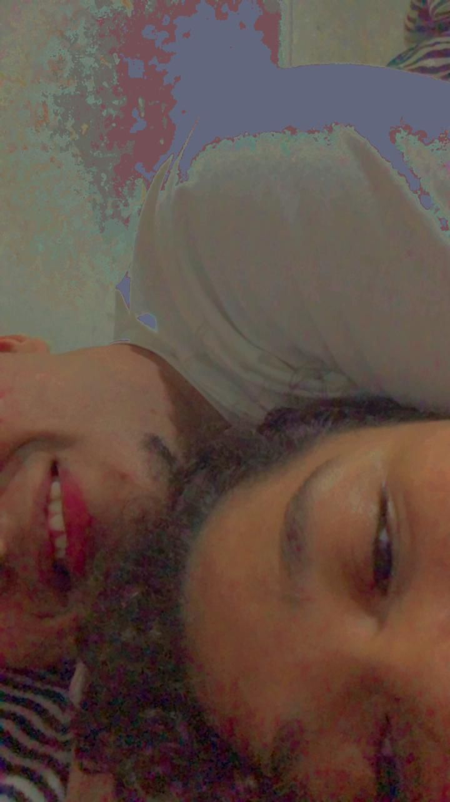
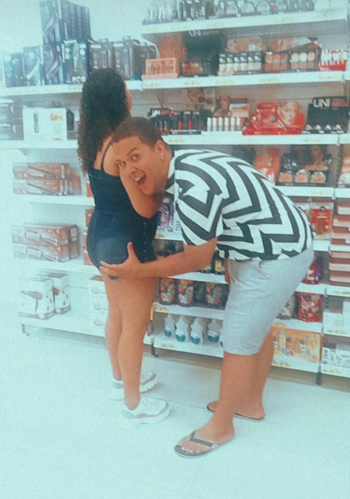
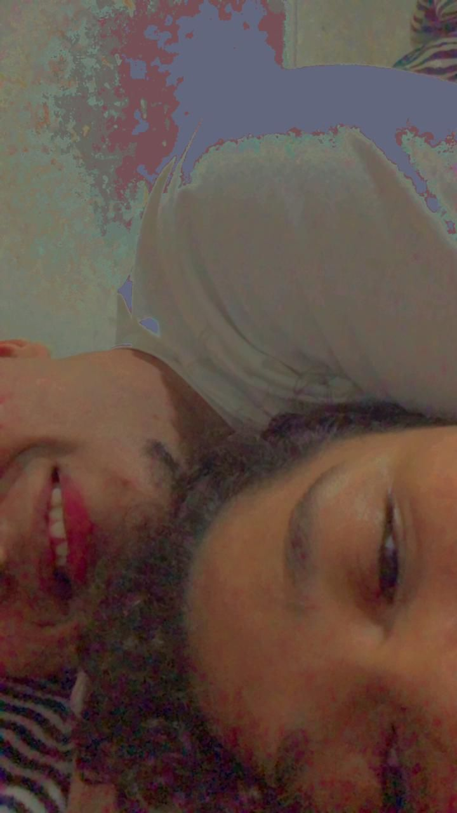
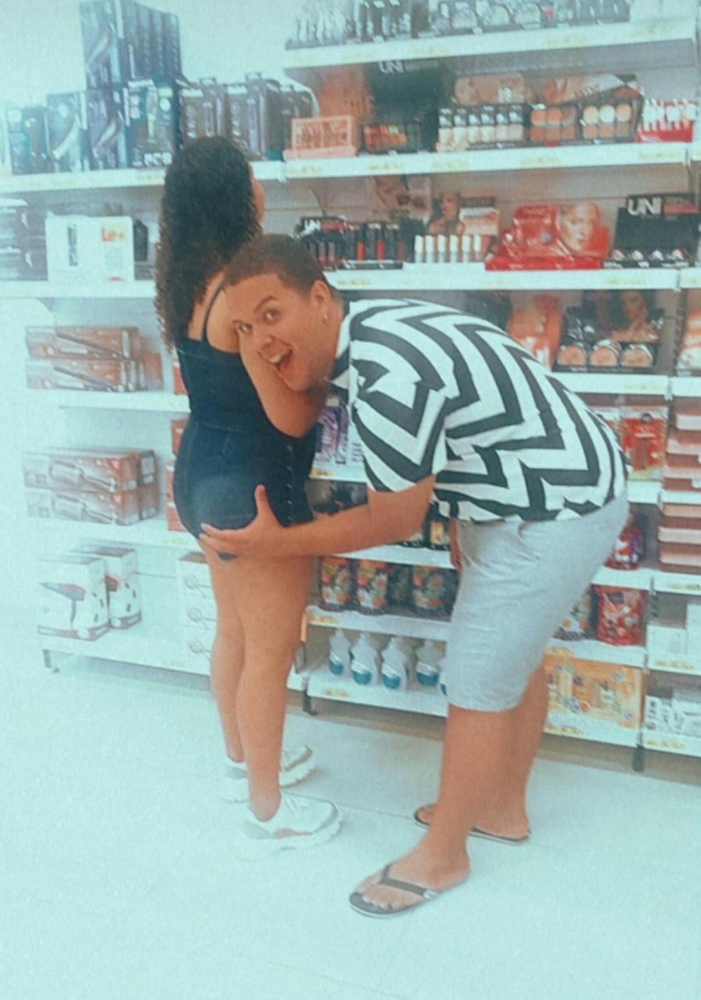

Minha Mensagem Final para Você, Vitória!
"Para a minha Vitória,
Meu desejo mais profundo é que você seja **minha nene para sempre**. Que cada desafio em nosso caminho se torne uma oportunidade para fortalecer ainda mais nosso relacionamento. Quero que você continue sendo a **minha base, o meu porto seguro**, e prometo zelar para que essa conexão nunca se desfaça, vivendo eternamente em meu coração, mesmo quando eu não puder mais estar aqui para testemunhar o quanto fui amado por você."
E sim, você sempre será minha princesa! ❤️
Com todo o meu amor, Pedro Henrique ❤️
 


